3.1 Overview
Layer 2 is the core of the system. It receives a validated, guardrail-approved request and turns it into a sequence of model calls and tool actions that achieve the user's goal. In the diagram it has three blocks: Request Handling (covered in the Architecture Overview), the Agent Orchestrator with its Planner/Reasoner, three sub-agents and Memory Manager, and the Action Executor.
Responsibilities of the layer:
- Own the lifecycle of a run: create, plan, execute, pause (for approval), resume, complete, fail, cancel.
- Decompose goals into tasks and assign them to specialised sub-agents.
- Bound autonomy: step limits, token budgets, time limits, allowed tools.
- Maintain shared state that every agent reads and writes.
- Execute actions safely through a single executor.
- Emit a complete trace.
Dependencies: Layer 4 (memory), Layer 3 through the executor (tools), Layer 6 (all inference), Layer 5 (guardrails invoked at the boundary and optionally per step), Layer 12 (approval requests).
3.2 Architecture

Mermaid source diagrams/agent-workflow.mmd
flowchart TD
START([Task received]) --> LOAD[Load context from Memory Manager]
LOAD --> PLAN[Planner / Reasoner<br/>decompose into task DAG]
PLAN --> ROUTE{Assign task}
ROUTE -->|information need| RES[Researcher Sub-Agent]
ROUTE -->|interpretation need| ANA[Analyst Sub-Agent]
ROUTE -->|computation need| COD[Coder Sub-Agent]
RES --> LOOP
ANA --> LOOP
COD --> LOOP
subgraph LOOP["ReAct loop (per sub-agent)"]
direction TB
THINK[Thought] --> ACT[Action: tool call]
ACT --> OBS[Observation]
OBS --> DONE{Goal met?}
DONE -->|no, iter < max| THINK
end
DONE -->|yes| SHARE[Write result to shared state]
DONE -->|budget exhausted| ESC[Escalate to orchestrator]
SHARE --> MORE{More tasks?}
ESC --> REPLAN[Re-plan or HITL]
REPLAN --> ROUTE
MORE -->|yes| ROUTE
MORE -->|no| REFLECT[Reflection: critique draft]
REFLECT -->|revise| ROUTE
REFLECT -->|accept| SYN[Synthesize final response]
SYN --> MEMW[Update memory]
MEMW --> END([Return])
3.2.1 Agent Orchestrator
The orchestrator is a state machine, not a prompt. In the reference implementation it is a LangGraph StateGraph (see code-examples/agent_orchestrator.py) with nodes load_context → plan → execute_task (loop) → reflect → synthesize → persist and conditional edges between them.
Its responsibilities:
- Lifecycle management. Each run has an ID, a checkpointed state and a status. Checkpointing (LangGraph checkpointers backed by PostgreSQL or Redis) makes runs resumable after a worker crash and pausable for human approval.
- Task decomposition. Delegated to the planner, but the orchestrator validates the plan (schema, task count, dependency cycles) and computes execution order.
- Workflow control. Decides what runs next, in parallel where dependencies allow, and when to stop: all tasks done, budget exhausted, reviewer rejects twice, user cancels.
- Budget enforcement. Tokens, steps per task, revisions, wall-clock time. Budgets are the primary defence against agent loops and cost runaway.
- Error handling. A failed tool call is returned to the sub-agent as an observation (so it can retry differently); a failed task is returned to the planner (so it can re-plan); a failed run is surfaced to the user with the partial results.
3.2.2 Planner / Reasoner
The planner converts an objective plus context into a structured plan. It is a single call to a strong reasoning model, constrained to output JSON that validates against a Plan schema:
{
"objective": "Analyse competitors and prepare a business report",
"tasks": [
{"id": "t1", "agent": "researcher", "goal": "Identify top 3 competitors and collect revenue, pricing, positioning",
"depends_on": [], "acceptance": "Table with sources for each competitor"},
{"id": "t2", "agent": "coder", "goal": "Compute growth rates and produce a comparison chart from t1 data",
"depends_on": ["t1"], "acceptance": "PNG chart and CSV of computed metrics"},
{"id": "t3", "agent": "analyst", "goal": "Assess threats and opportunities relative to our product",
"depends_on": ["t1", "t2"], "acceptance": "SWOT with confidence levels"}
],
"final_deliverable": "Executive report (markdown) with chart and cited sources"
}
Planning strategies, from cheapest to most thorough:
- Chain-of-thought style reasoning. The model reasons in its output before committing to a plan. Modern reasoning models do this natively; for others, ask for a
reasoningfield before thetasksfield. - ReAct. Not a planning strategy as such but the execution loop inside each task: Thought (what do I need next), Action (a tool call), Observation (the result). The reference sub-agents run ReAct with a step budget.
- Plan-and-execute. The pattern used by the orchestrator: plan once, execute, re-plan only on failure or reviewer rejection. This limits planning cost and makes the plan reviewable by a human before execution when required.
- Tree-of-thought / search. Generate several candidate plans or next steps, score them (with a value model or a critic prompt), expand the best. Valuable for puzzles and code repair; too expensive for most business tasks. Use selectively, for example only in the coder agent when tests keep failing.
- Reflection. A reviewer prompt critiques the aggregated results against the objective and acceptance criteria and returns ACCEPT or REVISE: reasons. One revision round usually captures most of the quality gain; more rounds mostly add cost.
Decision making inside the planner is improved far more by good context (memory bundle, tool catalogue with clear descriptions, acceptance criteria) than by elaborate prompting.
3.2.3 Multi-agent architecture
The diagram shows three sub-agents. Each is a ReAct loop with its own system prompt, tool allow-list, model routing class and budget.
Researcher. Information gathering: web and enterprise search, document retrieval from the vector store, database reads, reading files from storage. Output is evidence with sources. Tools: web_search, retrieve_documents, query_database (read-only), read_file. Model class: fast, large-context, good at tool use.
Analyst. Interpretation and decision support: compares evidence, computes or requests computations, evaluates options, states confidence and caveats. Tools: retrieve_documents, run_code (for calculations), optionally send_email/create_ticket under approval. Model class: strongest reasoning model; prompt-cached system prompt.
Coder. Code generation, testing and execution in the sandbox: data transformation, chart generation, scripts, small applications. Loop: write → run → read errors → fix, bounded to N iterations. Tools: run_code, read_file, write_file (workspace only), run_tests. Model class: best code model available.
Agent communication
Sub-agents do not talk to each other directly. They communicate through shared state owned by the orchestrator: each task's result is written under its ID, and dependent tasks receive their inputs from those results. This has three advantages over peer-to-peer messaging:
- Every hand-off is recorded and reproducible.
- The orchestrator can validate and truncate what flows between agents, which limits prompt-injection propagation.
- Agents can run in parallel when their dependencies allow.
Direct conversational hand-offs (agent A asks agent B a question) are supported by frameworks such as AutoGen and OpenAI's Agents SDK. They are useful for debate or negotiation patterns but are harder to bound and trace; prefer orchestrator-mediated state for production workflows.
Collaboration patterns
| Pattern | Description | Fit |
|---|---|---|
| Orchestrator–workers (hierarchical) | One planner assigns tasks, workers execute, results are merged | Default for business tasks; used in the reference implementation |
| Pipeline | Fixed sequence of specialists (extract → transform → validate) | Document processing, ETL-like flows |
| Debate / critic | Two agents argue, a judge decides | Quality-critical decisions, red-teaming |
| Swarm / hand-off | Agents transfer control to each other based on intent | Customer support routing across domains |
| Map–reduce | Many identical agents process shards, one reduces | Large document sets, batch analysis |
3.2.4 Memory Manager
The memory manager is the runtime's façade over Layer 4. It exposes two operations, load_context(session, user, query) and append/remember(...), and hides which store holds what. It is described in detail in Memory System; from the runtime's perspective the important properties are that context is budgeted (never more than N tokens), scoped (tenant and user filters are applied inside the manager) and consolidated (overflowing short-term memory is summarised, not dropped).
3.2.5 Action Executor
The action executor is the only component that performs side effects. The diagram lists its five responsibilities: tool selection, action execution, response building, output formatting and stream/return.

Mermaid source diagrams/tool-execution.mmd
flowchart TD
D[Sub-agent decides] --> SEL[Tool selection<br/>schema-matched from registry]
SEL --> PERM{Permission check<br/>RBAC · tool policy}
PERM -->|denied| REF[Return refusal to agent]
PERM -->|high risk| HITL[Human approval]
HITL -->|rejected| REF
HITL -->|approved| VAL
PERM -->|allowed| VAL[Validate arguments<br/>JSON Schema]
VAL --> EXEC[Execute]
EXEC --> MCP[MCP server]
EXEC --> API[REST / GraphQL]
EXEC --> SBX[Sandbox]
EXEC --> DB[(Database)]
MCP --> RES
API --> RES
SBX --> RES
DB --> RES
RES[Result<br/>timeout · retry · circuit breaker] --> SAN[Sanitize result<br/>treat as untrusted]
SAN --> MEM[Persist observation]
MEM --> BUILD[Response builder]
BUILD --> FMT[Output formatter<br/>markdown · JSON · UI blocks]
FMT --> STREAM[Stream / return]
- Tool selection. The model selects a tool by emitting a function call whose name and arguments match a schema from the registry. The executor resolves the name, rejects unknown tools and checks the agent's allow-list.
- Action execution. Permission check (RBAC/ABAC policy), argument validation against JSON Schema, risk tiering (
readexecutes,writeandirreversiblerequire approval), then invocation with timeout, retries (reads only) and a circuit breaker per tool. Results are size-bounded and sanitised. - Response builder. Assembles the final answer from task results and the synthesis output, attaching citations, generated files and structured blocks.
- Output formatter. Renders per channel: markdown for web, Block Kit for Slack, Adaptive Cards for Teams, plain JSON for API clients.
- Stream / return. Emits events (
plan,step,token,approval,done) to the event stream and persists the final response.
Example workflow, as in the diagram: the agent decides → selects tool → the executor executes the function → receives the result → the memory manager records the observation → the agent generates the answer.
3.3 Implementation guide
3.3.1 Framework selection
| Framework | Model | Strengths | Considerations |
|---|---|---|---|
| LangGraph | Explicit state graph, checkpointing, interrupts | Deterministic control flow, resumable runs, human-in-the-loop primitives, streaming | Python/JS; graph design requires upfront thought |
| AutoGen (Microsoft) | Conversational multi-agent, group chat | Rapid prototyping of agent teams, code execution built in | Conversation-driven control is harder to bound and audit |
| CrewAI | Role-based crews with tasks and processes | Very quick to express role/task setups | Less control over low-level loop; opinionated abstractions |
| Semantic Kernel | Plugins, planners, .NET and Python | Enterprise .NET integration, Azure alignment | Planner quality varies; more plumbing |
| OpenAI Agents SDK | Agents, hand-offs, guardrails, tracing | Lightweight, good tracing, hand-off pattern | Tied closely to OpenAI models (can be adapted) |
| Custom runtime | Your own loop on top of a gateway | Total control, minimal dependencies | You re-implement checkpointing, streaming, tracing |
Recommendation: LangGraph for the orchestrator (explicit graphs, checkpointers, interrupt for approvals), with framework-agnostic sub-agent loops so models and prompts can be swapped without rewriting control flow.
3.3.2 Building the orchestrator
- Model the run as a typed state (
TypedDictor Pydantic) and give every node a single responsibility. - Force structured output for plans (JSON schema, or the provider's structured-output mode) and validate it; never parse plans from free text.
- Put budgets in state and check them in every loop. Emit a
budget_exhaustedstatus rather than raising. - Use a durable checkpointer (
PostgresSaver) so approvals can take hours and workers can be replaced. - Run tasks with satisfied dependencies concurrently (
asyncio.gatherover a wave of the DAG) with a concurrency cap per run. - Make sub-agent prompts explicit about stopping: "Stop when the acceptance criterion is met; do not continue to gather more."
3.3.3 Configuration approach
Keep the following out of code and in versioned configuration (YAML in the repository, promoted through environments):
agents:
researcher:
model_class: "agent:researcher"
tools: [web_search, retrieve_documents, query_database_ro, read_file]
max_steps: 6
prompt_version: researcher-v14
analyst:
model_class: "agent:analyst"
tools: [retrieve_documents, run_code, send_email]
max_steps: 5
prompt_version: analyst-v9
coder:
model_class: "agent:coder"
tools: [run_code, read_file, write_file, run_tests]
max_steps: 8
prompt_version: coder-v11
orchestrator:
max_plan_tasks: 8
max_revisions: 1
max_total_tokens: 150000
max_wall_clock_s: 600
parallel_tasks: 3
Prompts are stored in a prompt registry (LangSmith Hub, a Git-backed store, or a table) with versions; the configuration pins versions so a run is reproducible.
3.3.4 Production considerations
- Idempotency. Replays after crashes must not re-execute write tools. Record executed tool calls with their IDs in state and skip on replay.
- Cancellation. Propagate cancellation to in-flight model and tool calls (
asyncio.CancelledError, HTTP client timeouts). Mark the runcancelledand keep partial results. - Isolation. One run per worker task; no shared mutable globals; tenant ID in every state and every query.
- Backpressure. Runs are enqueued (SQS, RabbitMQ, Redis Streams, Kafka) and workers pull with a concurrency limit; the API never spawns agents in-process.
- Determinism for tests. Record gateway responses (VCR-style) and replay in CI so graph logic can be tested without model calls.
3.4 Example implementation
The full orchestrator is in code-examples/agent_orchestrator.py. The core ReAct loop:
for step in range(self.budget.max_steps_per_task):
out = await self.gw.complete(task_class=f"agent:{agent}", messages=msgs, tools=tool_schemas)
state["budget"]["tokens"] -= out.get("usage", {}).get("total_tokens", 0)
if state["budget"]["tokens"] <= 0:
return {"status": "budget_exhausted", "observations": observations}
if not out.get("tool_calls"): # model finished
return {"status": "done", "answer": out["text"], "observations": observations}
msgs.append({"role": "assistant", "content": out.get("text", ""), "tool_calls": out["tool_calls"]})
for call in out["tool_calls"]:
result = await self.tools.execute(agent=agent, name=call["name"],
arguments=call["arguments"], principal=state["principal"])
observations.append({"tool": call["name"], "args": call["arguments"], "result": result})
msgs.append({"role": "tool", "tool_call_id": call["id"],
"content": json.dumps({"tool_result": result}, default=str)[:12_000]})
return {"status": "max_steps", "observations": observations}
Pausing for approval with LangGraph's interrupt mechanism:
from langgraph.types import interrupt
async def execute_task(self, state):
...
if spec.risk in ("write", "irreversible"):
decision = interrupt({"type": "approval", "tool": name, "arguments": arguments})
if not decision.get("approved"):
return {"results": {task_id: {"status": "rejected_by_reviewer"}}}
The run stops, the checkpoint is persisted, an approval event is streamed to the UI, and graph.ainvoke(Command(resume={"approved": True}), config) continues it later.
3.5 Best practices
- Common mistakes. Unbounded loops; letting agents share raw tool output (thousands of tokens) instead of summaries; one giant prompt with all tools (selection quality collapses above ~20 tools); using the strongest model for every step; parsing plans from prose.
- Optimisation. Route planner and reviewer to the reasoning model, sub-agent steps to cheaper models where quality allows; cache the system prompt and tool schemas (prompt caching); run independent tasks in parallel; stream the plan immediately so the user sees progress.
- Security. Tool output is untrusted: wrap it, bound it, never let it contain instructions the model must follow; sub-agents get the minimum tool set; the principal (user identity) travels with every tool call so authorization is evaluated against the user, not the agent.